03 ML1 - 2A: A first version (13:22)
03 ML1 - 2B: A better version (10:28)
03 ML1 - 2C: Cross-validation implementation (21:7)
0302 - The Perceptron algorithm for linear classification
Some stuff to set-up the environment..
julia> cd(@__DIR__)julia> using Pkgjulia> Pkg.activate(".")Activating project at `~/work/SPMLJ/SPMLJ/buildedDoc/03_-_ML1_-_Introduction_to_Machine_Learning`julia> # If using a Julia version different than 1.7 please uncomment and run the following line (the guarantee of reproducibility will however be lost) # Pkg.resolve() Pkg.instantiate()julia> using Randomjulia> Random.seed!(123)Random.TaskLocalRNG()
Perceptron elementary operations
julia> using StatsPlotsjulia> function plot2DClassifierWithData(X,y,θ;d1=1,d2=2,origin=false,pid=1) colors = [y == -1 ? "red" : "green" for y in y] labels = [y == -1 ? "-1" : "+1" for y in y] minD1,maxD1 = extrema(X[:,d1]) minD2,maxD2 = extrema(X[:,d2]) myplot = scatter(X[:,d1],X[:,d2], colour=colors, title="Linear classifier in 2D",xlabel="Dimx: $d1", ylabel="Dimy: $d2", group=labels) constTerm = 0.0 if !origin d1 += 1 d2 += 1 constTerm = -θ[1]/θ[d2] end d2Class(x) = constTerm -x * θ[d1]/θ[d2] if θ[d2] == 0 vline!([0], color= "blue",label="",linewidth=5) else plot!(d2Class,min(θ[d1],minD1),max(maxD1,θ[d1]), color= "blue",label="",linewidth=5) end plot!([0,θ[d1]],[0,θ[d2]],arrow=true,color=:black,linewidth=2,label="") display(myplot) savefig("currentPlot$(pid).svg"); endplot2DClassifierWithData (generic function with 1 method)julia> isClassificationError(θ,y,x) = y * (θ' * x) <= eps()isClassificationError (generic function with 1 method)julia> perceptronUpdate(θ,y,x) = return θ .+ y .* xperceptronUpdate (generic function with 1 method)julia> X = [ 2 4 -6 1]2×2 Matrix{Int64}: 2 4 -6 1julia> y = [-1,-1]2-element Vector{Int64}: -1 -1julia> θ₀ = [0,0]2-element Vector{Int64}: 0 0julia> θ = θ₀2-element Vector{Int64}: 0 0julia> ϵ = isClassificationError(θ,y[1],X[1,:])truejulia> θ = perceptronUpdate(θ,y[1],X[1,:])2-element Vector{Int64}: -2 -4julia> plot2DClassifierWithData(X,y,θ,origin=true,pid=1)
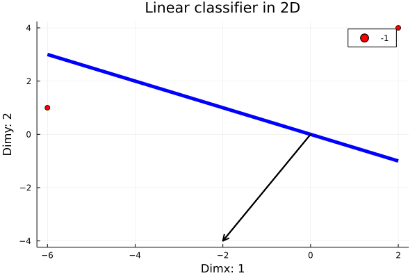
julia> ϵ = isClassificationError(θ,y[1],X[1,:])falsejulia> ϵ = isClassificationError(θ,y[2],X[2,:])truejulia> θ = perceptronUpdate(θ,y[2],X[2,:])2-element Vector{Int64}: 4 -5julia> plot2DClassifierWithData(X,y,θ,origin=true,pid=2)
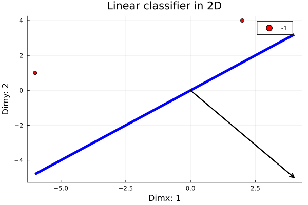
julia> ϵ = isClassificationError(θ,y[2],X[2,:])falsejulia> ϵ = isClassificationError(θ,y[1],X[1,:])falsejulia> X = [ 2 4 1 -2]2×2 Matrix{Int64}: 2 4 1 -2julia> θ = θ₀2-element Vector{Int64}: 0 0julia> ϵ = isClassificationError(θ,y[1],X[1,:])truejulia> θ = perceptronUpdate(θ,y[1],X[1,:])2-element Vector{Int64}: -2 -4julia> plot2DClassifierWithData(X,y,θ, origin=true,pid=3)
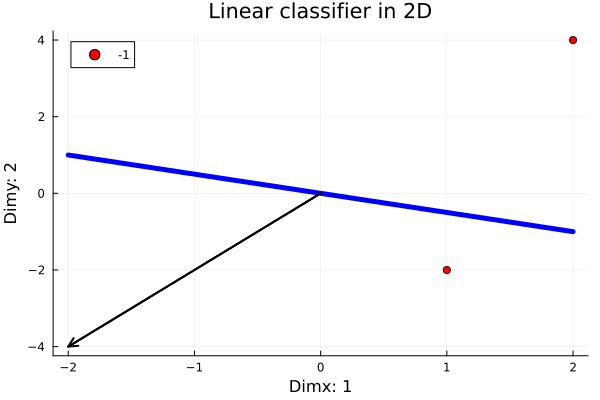
julia> ϵ = isClassificationError(θ,y[1],X[1,:])falsejulia> ϵ = isClassificationError(θ,y[2],X[2,:])truejulia> θ = perceptronUpdate(θ,y[2],X[2,:])2-element Vector{Int64}: -3 -2julia> plot2DClassifierWithData(X,y,θ, origin=true,pid=4)
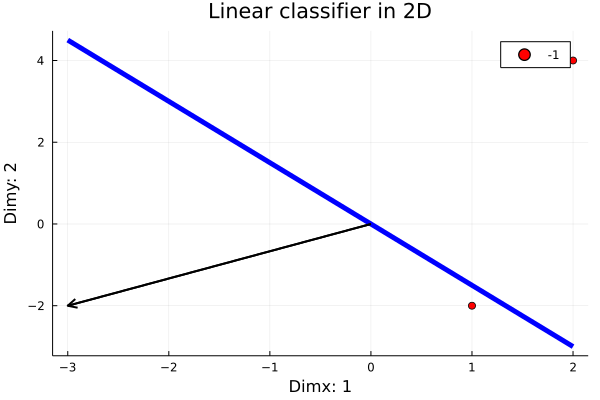
julia> ϵ = isClassificationError(θ,y[1],X[1,:])falsejulia> ϵ = isClassificationError(θ,y[2],X[2,:])truejulia> θ = perceptronUpdate(θ,y[2],X[2,:])2-element Vector{Int64}: -4 0julia> plot2DClassifierWithData(X,y,θ,origin=true,pid=5)
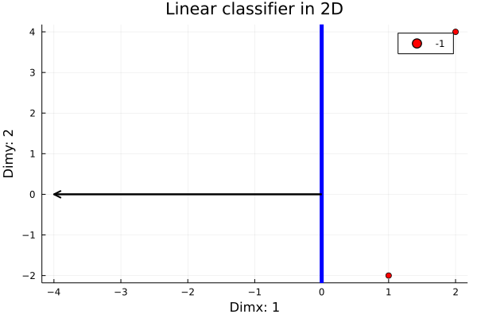
julia> ϵ = isClassificationError(θ,y[1],X[1,:])falsejulia> ϵ = isClassificationError(θ,y[2],X[2,:])falsejulia> θ2-element Vector{Int64}: -4 0julia> X = [ 2 4 -2 2]2×2 Matrix{Int64}: 2 4 -2 2julia> y = [-1,1]2-element Vector{Int64}: -1 1julia> θ = θ₀2-element Vector{Int64}: 0 0julia> ϵ = isClassificationError(θ,y[1],X[1,:])truejulia> θ = perceptronUpdate(θ,y[1],X[1,:])2-element Vector{Int64}: -2 -4julia> plot2DClassifierWithData(X,y,θ, origin=true,pid=6)
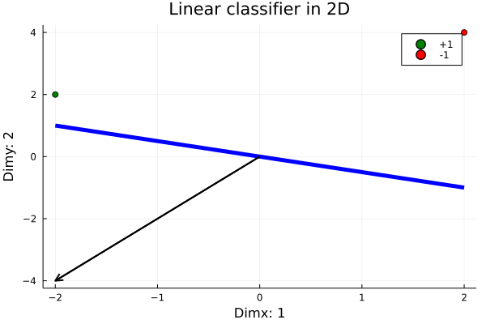
julia> ϵ = isClassificationError(θ,y[2],X[2,:])truejulia> θ = perceptronUpdate(θ,y[2],X[2,:])2-element Vector{Int64}: -4 -2julia> plot2DClassifierWithData(X,y,θ,origin=true,pid=7)
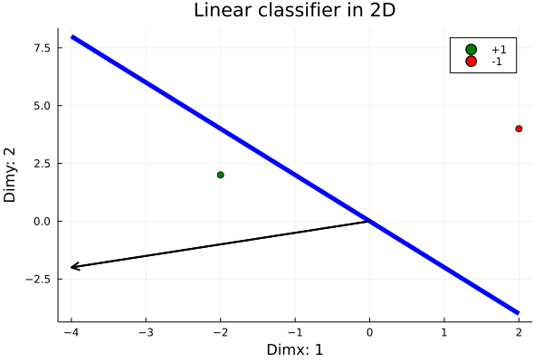
The complete algorithm
julia> function perceptronOrigin(X,y,epochs=1;verbose=false) (nR,nD) = size(X) local θ = zeros(nD) for t in 1:epochs for n in 1:nR if verbose println("$n: X[n,:] \t θ: $θ") end if isClassificationError(θ,y[n],X[n,:]) θ = perceptronUpdate(θ,y[n],X[n,:]) if verbose println("**update! New theta: $θ") end end end end return θ endperceptronOrigin (generic function with 2 methods)julia> θopt = perceptronOrigin(X,y,verbose=true)1: X[n,:] θ: [0.0, 0.0] **update! New theta: [-2.0, -4.0] 2: X[n,:] θ: [-2.0, -4.0] **update! New theta: [-4.0, -2.0] 2-element Vector{Float64}: -4.0 -2.0julia> plot2DClassifierWithData(X,y,θopt, origin=true,pid=8)
julia> using BetaML, DelimitedFilesjulia> baseDir = joinpath(dirname(pathof(BetaML)),"..","test","data")"/home/runner/.julia/packages/BetaML/cpTAz/src/../test/data"julia> perceptronData = readdlm(joinpath(dirname(pathof(BetaML)),"..","test","data","binary2DData.csv"),'\t')200×3 Matrix{Float64}: -1.0 1.76 0.4 -1.0 0.979 2.24 -1.0 1.87 -0.977 -1.0 0.95 -0.151 -1.0 -0.103 0.411 -1.0 0.144 1.45 -1.0 0.761 0.122 -1.0 0.444 0.334 -1.0 1.49 -0.205 -1.0 0.313 -0.854 ⋮ 1.0 -0.256 0.977 1.0 2.04 0.343 1.0 1.01 0.528 1.0 3.65 2.16 1.0 2.57 1.78 1.0 1.65 0.384 1.0 1.71 1.24 1.0 2.86 3.14 1.0 3.47 2.85julia> nR = size(perceptronData,1)200julia> idx = shuffle(1:nR)200-element Vector{Int64}: 123 131 74 23 19 78 43 130 83 186 ⋮ 137 175 182 37 71 89 142 82 170julia> perceptronData = perceptronData[idx,:]200×3 Matrix{Float64}: 1.0 1.69 0.324 1.0 0.811 1.49 -1.0 -0.913 1.12 -1.0 -0.5097 -0.4381 -1.0 1.23 1.2 -1.0 -0.0985 -0.6635 -1.0 1.49 1.9 1.0 0.417 2.61 -1.0 -1.23 0.844 1.0 2.28 1.01 ⋮ 1.0 3.96 2.39 1.0 2.58 2.35 1.0 2.93 2.34 -1.0 1.14 -1.23 -1.0 -1.49 0.439 -1.0 -0.8034 -0.6895 1.0 1.31 3.54 -1.0 0.949 0.0876 1.0 1.32 3.66julia> X = copy(perceptronData[:,[2,3]])200×2 Matrix{Float64}: 1.69 0.324 0.811 1.49 -0.913 1.12 -0.5097 -0.4381 1.23 1.2 -0.0985 -0.6635 1.49 1.9 0.417 2.61 -1.23 0.844 2.28 1.01 ⋮ 3.96 2.39 2.58 2.35 2.93 2.34 1.14 -1.23 -1.49 0.439 -0.8034 -0.6895 1.31 3.54 0.949 0.0876 1.32 3.66julia> y = convert(Array{Int64,1},copy(perceptronData[:,1]))200-element Vector{Int64}: 1 1 -1 -1 -1 -1 -1 1 -1 1 ⋮ 1 1 1 -1 -1 -1 1 -1 1julia> θopt = perceptronOrigin(X,y,verbose=true)1: X[n,:] θ: [0.0, 0.0] **update! New theta: [1.69, 0.324] 2: X[n,:] θ: [1.69, 0.324] 3: X[n,:] θ: [1.69, 0.324] 4: X[n,:] θ: [1.69, 0.324] 5: X[n,:] θ: [1.69, 0.324] **update! New theta: [0.45999999999999996, -0.8759999999999999] 6: X[n,:] θ: [0.45999999999999996, -0.8759999999999999] **update! New theta: [0.5585, -0.2124999999999999] 7: X[n,:] θ: [0.5585, -0.2124999999999999] **update! New theta: [-0.9315, -2.1125] 8: X[n,:] θ: [-0.9315, -2.1125] **update! New theta: [-0.5145, 0.49750000000000005] 9: X[n,:] θ: [-0.5145, 0.49750000000000005] **update! New theta: [0.7155, -0.3464999999999999] 10: X[n,:] θ: [0.7155, -0.3464999999999999] 11: X[n,:] θ: [0.7155, -0.3464999999999999] **update! New theta: [1.2915, 1.1635] 12: X[n,:] θ: [1.2915, 1.1635] 13: X[n,:] θ: [1.2915, 1.1635] 14: X[n,:] θ: [1.2915, 1.1635] 15: X[n,:] θ: [1.2915, 1.1635] **update! New theta: [-0.5785, 0.25749999999999995] 16: X[n,:] θ: [-0.5785, 0.25749999999999995] 17: X[n,:] θ: [-0.5785, 0.25749999999999995] **update! New theta: [1.1315, -1.6925] 18: X[n,:] θ: [1.1315, -1.6925] 19: X[n,:] θ: [1.1315, -1.6925] **update! New theta: [2.6515, 0.9275000000000002] 20: X[n,:] θ: [2.6515, 0.9275000000000002] 21: X[n,:] θ: [2.6515, 0.9275000000000002] 22: X[n,:] θ: [2.6515, 0.9275000000000002] **update! New theta: [1.7045, 1.0825000000000002] 23: X[n,:] θ: [1.7045, 1.0825000000000002] 24: X[n,:] θ: [1.7045, 1.0825000000000002] **update! New theta: [0.5245, 1.2625000000000002] 25: X[n,:] θ: [0.5245, 1.2625000000000002] 26: X[n,:] θ: [0.5245, 1.2625000000000002] **update! New theta: [-0.4255, 1.4135000000000002] 27: X[n,:] θ: [-0.4255, 1.4135000000000002] 28: X[n,:] θ: [-0.4255, 1.4135000000000002] 29: X[n,:] θ: [-0.4255, 1.4135000000000002] **update! New theta: [2.3445, 2.2295000000000003] 30: X[n,:] θ: [2.3445, 2.2295000000000003] 31: X[n,:] θ: [2.3445, 2.2295000000000003] 32: X[n,:] θ: [2.3445, 2.2295000000000003] 33: X[n,:] θ: [2.3445, 2.2295000000000003] **update! New theta: [0.1844999999999999, 0.8895000000000002] 34: X[n,:] θ: [0.1844999999999999, 0.8895000000000002] 35: X[n,:] θ: [0.1844999999999999, 0.8895000000000002] **update! New theta: [1.2545, -0.16049999999999986] 36: X[n,:] θ: [1.2545, -0.16049999999999986] 37: X[n,:] θ: [1.2545, -0.16049999999999986] **update! New theta: [0.49349999999999994, -0.28249999999999986] 38: X[n,:] θ: [0.49349999999999994, -0.28249999999999986] **update! New theta: [0.5571999999999999, 1.9075000000000002] 39: X[n,:] θ: [0.5571999999999999, 1.9075000000000002] 40: X[n,:] θ: [0.5571999999999999, 1.9075000000000002] 41: X[n,:] θ: [0.5571999999999999, 1.9075000000000002] 42: X[n,:] θ: [0.5571999999999999, 1.9075000000000002] **update! New theta: [0.8251999999999999, 1.1055000000000001] 43: X[n,:] θ: [0.8251999999999999, 1.1055000000000001] 44: X[n,:] θ: [0.8251999999999999, 1.1055000000000001] 45: X[n,:] θ: [0.8251999999999999, 1.1055000000000001] **update! New theta: [-1.0448000000000002, 2.0825] 46: X[n,:] θ: [-1.0448000000000002, 2.0825] 47: X[n,:] θ: [-1.0448000000000002, 2.0825] **update! New theta: [-0.6968000000000002, 1.9265] 48: X[n,:] θ: [-0.6968000000000002, 1.9265] 49: X[n,:] θ: [-0.6968000000000002, 1.9265] 50: X[n,:] θ: [-0.6968000000000002, 1.9265] 51: X[n,:] θ: [-0.6968000000000002, 1.9265] **update! New theta: [0.9170999999999997, 2.1392] 52: X[n,:] θ: [0.9170999999999997, 2.1392] 53: X[n,:] θ: [0.9170999999999997, 2.1392] 54: X[n,:] θ: [0.9170999999999997, 2.1392] **update! New theta: [1.7780999999999998, 0.2292000000000003] 55: X[n,:] θ: [1.7780999999999998, 0.2292000000000003] 56: X[n,:] θ: [1.7780999999999998, 0.2292000000000003] 57: X[n,:] θ: [1.7780999999999998, 0.2292000000000003] 58: X[n,:] θ: [1.7780999999999998, 0.2292000000000003] 59: X[n,:] θ: [1.7780999999999998, 0.2292000000000003] 60: X[n,:] θ: [1.7780999999999998, 0.2292000000000003] 61: X[n,:] θ: [1.7780999999999998, 0.2292000000000003] 62: X[n,:] θ: [1.7780999999999998, 0.2292000000000003] 63: X[n,:] θ: [1.7780999999999998, 0.2292000000000003] 64: X[n,:] θ: [1.7780999999999998, 0.2292000000000003] 65: X[n,:] θ: [1.7780999999999998, 0.2292000000000003] 66: X[n,:] θ: [1.7780999999999998, 0.2292000000000003] 67: X[n,:] θ: [1.7780999999999998, 0.2292000000000003] 68: X[n,:] θ: [1.7780999999999998, 0.2292000000000003] 69: X[n,:] θ: [1.7780999999999998, 0.2292000000000003] 70: X[n,:] θ: [1.7780999999999998, 0.2292000000000003] **update! New theta: [0.018099999999999783, -0.17079999999999973] 71: X[n,:] θ: [0.018099999999999783, -0.17079999999999973] 72: X[n,:] θ: [0.018099999999999783, -0.17079999999999973] 73: X[n,:] θ: [0.018099999999999783, -0.17079999999999973] 74: X[n,:] θ: [0.018099999999999783, -0.17079999999999973] **update! New theta: [3.1681, 2.9092000000000002] 75: X[n,:] θ: [3.1681, 2.9092000000000002] 76: X[n,:] θ: [3.1681, 2.9092000000000002] 77: X[n,:] θ: [3.1681, 2.9092000000000002] **update! New theta: [3.5711, 1.6892000000000003] 78: X[n,:] θ: [3.5711, 1.6892000000000003] 79: X[n,:] θ: [3.5711, 1.6892000000000003] 80: X[n,:] θ: [3.5711, 1.6892000000000003] 81: X[n,:] θ: [3.5711, 1.6892000000000003] 82: X[n,:] θ: [3.5711, 1.6892000000000003] 83: X[n,:] θ: [3.5711, 1.6892000000000003] **update! New theta: [2.3811, 1.3722000000000003] 84: X[n,:] θ: [2.3811, 1.3722000000000003] 85: X[n,:] θ: [2.3811, 1.3722000000000003] 86: X[n,:] θ: [2.3811, 1.3722000000000003] 87: X[n,:] θ: [2.3811, 1.3722000000000003] 88: X[n,:] θ: [2.3811, 1.3722000000000003] **update! New theta: [2.2141, 0.7372000000000003] 89: X[n,:] θ: [2.2141, 0.7372000000000003] 90: X[n,:] θ: [2.2141, 0.7372000000000003] 91: X[n,:] θ: [2.2141, 0.7372000000000003] 92: X[n,:] θ: [2.2141, 0.7372000000000003] 93: X[n,:] θ: [2.2141, 0.7372000000000003] 94: X[n,:] θ: [2.2141, 0.7372000000000003] **update! New theta: [1.6001000000000003, -0.18479999999999974] 95: X[n,:] θ: [1.6001000000000003, -0.18479999999999974] 96: X[n,:] θ: [1.6001000000000003, -0.18479999999999974] **update! New theta: [0.7431000000000003, 0.4662000000000003] 97: X[n,:] θ: [0.7431000000000003, 0.4662000000000003] 98: X[n,:] θ: [0.7431000000000003, 0.4662000000000003] 99: X[n,:] θ: [0.7431000000000003, 0.4662000000000003] **update! New theta: [-0.3868999999999996, 1.5462000000000002] 100: X[n,:] θ: [-0.3868999999999996, 1.5462000000000002] **update! New theta: [-0.5138999999999996, 1.1442] 101: X[n,:] θ: [-0.5138999999999996, 1.1442] 102: X[n,:] θ: [-0.5138999999999996, 1.1442] **update! New theta: [-2.0439, -0.32579999999999987] 103: X[n,:] θ: [-2.0439, -0.32579999999999987] **update! New theta: [-0.0038999999999997925, 0.01720000000000016] 104: X[n,:] θ: [-0.0038999999999997925, 0.01720000000000016] 105: X[n,:] θ: [-0.0038999999999997925, 0.01720000000000016] 106: X[n,:] θ: [-0.0038999999999997925, 0.01720000000000016] 107: X[n,:] θ: [-0.0038999999999997925, 0.01720000000000016] 108: X[n,:] θ: [-0.0038999999999997925, 0.01720000000000016] **update! New theta: [1.1661000000000001, -0.8837999999999999] 109: X[n,:] θ: [1.1661000000000001, -0.8837999999999999] 110: X[n,:] θ: [1.1661000000000001, -0.8837999999999999] **update! New theta: [-0.7138999999999998, 0.46620000000000017] 111: X[n,:] θ: [-0.7138999999999998, 0.46620000000000017] **update! New theta: [0.3461000000000003, 2.0562000000000005] 112: X[n,:] θ: [0.3461000000000003, 2.0562000000000005] 113: X[n,:] θ: [0.3461000000000003, 2.0562000000000005] 114: X[n,:] θ: [0.3461000000000003, 2.0562000000000005] **update! New theta: [-0.009899999999999687, 1.3492000000000006] 115: X[n,:] θ: [-0.009899999999999687, 1.3492000000000006] **update! New theta: [-0.02039999999999969, -0.4407999999999994] 116: X[n,:] θ: [-0.02039999999999969, -0.4407999999999994] **update! New theta: [-0.5973999999999996, -0.23279999999999942] 117: X[n,:] θ: [-0.5973999999999996, -0.23279999999999942] **update! New theta: [1.2726000000000006, 2.847200000000001] 118: X[n,:] θ: [1.2726000000000006, 2.847200000000001] 119: X[n,:] θ: [1.2726000000000006, 2.847200000000001] 120: X[n,:] θ: [1.2726000000000006, 2.847200000000001] 121: X[n,:] θ: [1.2726000000000006, 2.847200000000001] 122: X[n,:] θ: [1.2726000000000006, 2.847200000000001] 123: X[n,:] θ: [1.2726000000000006, 2.847200000000001] 124: X[n,:] θ: [1.2726000000000006, 2.847200000000001] 125: X[n,:] θ: [1.2726000000000006, 2.847200000000001] 126: X[n,:] θ: [1.2726000000000006, 2.847200000000001] 127: X[n,:] θ: [1.2726000000000006, 2.847200000000001] **update! New theta: [1.1176000000000006, 2.4692000000000007] 128: X[n,:] θ: [1.1176000000000006, 2.4692000000000007] 129: X[n,:] θ: [1.1176000000000006, 2.4692000000000007] 130: X[n,:] θ: [1.1176000000000006, 2.4692000000000007] 131: X[n,:] θ: [1.1176000000000006, 2.4692000000000007] 132: X[n,:] θ: [1.1176000000000006, 2.4692000000000007] 133: X[n,:] θ: [1.1176000000000006, 2.4692000000000007] 134: X[n,:] θ: [1.1176000000000006, 2.4692000000000007] **update! New theta: [-0.8023999999999993, 0.9892000000000007] 135: X[n,:] θ: [-0.8023999999999993, 0.9892000000000007] **update! New theta: [-0.16639999999999933, 0.3132000000000007] 136: X[n,:] θ: [-0.16639999999999933, 0.3132000000000007] 137: X[n,:] θ: [-0.16639999999999933, 0.3132000000000007] 138: X[n,:] θ: [-0.16639999999999933, 0.3132000000000007] 139: X[n,:] θ: [-0.16639999999999933, 0.3132000000000007] **update! New theta: [-1.1453999999999993, -1.9267999999999996] 140: X[n,:] θ: [-1.1453999999999993, -1.9267999999999996] **update! New theta: [0.04460000000000064, -1.3927999999999996] 141: X[n,:] θ: [0.04460000000000064, -1.3927999999999996] 142: X[n,:] θ: [0.04460000000000064, -1.3927999999999996] **update! New theta: [1.6746000000000005, 0.3672000000000004] 143: X[n,:] θ: [1.6746000000000005, 0.3672000000000004] 144: X[n,:] θ: [1.6746000000000005, 0.3672000000000004] 145: X[n,:] θ: [1.6746000000000005, 0.3672000000000004] 146: X[n,:] θ: [1.6746000000000005, 0.3672000000000004] 147: X[n,:] θ: [1.6746000000000005, 0.3672000000000004] 148: X[n,:] θ: [1.6746000000000005, 0.3672000000000004] 149: X[n,:] θ: [1.6746000000000005, 0.3672000000000004] **update! New theta: [1.2726000000000006, 1.0522000000000005] 150: X[n,:] θ: [1.2726000000000006, 1.0522000000000005] 151: X[n,:] θ: [1.2726000000000006, 1.0522000000000005] **update! New theta: [-0.21739999999999937, 1.2572000000000005] 152: X[n,:] θ: [-0.21739999999999937, 1.2572000000000005] 153: X[n,:] θ: [-0.21739999999999937, 1.2572000000000005] 154: X[n,:] θ: [-0.21739999999999937, 1.2572000000000005] **update! New theta: [-2.5973999999999995, 0.3132000000000006] 155: X[n,:] θ: [-2.5973999999999995, 0.3132000000000006] **update! New theta: [-2.5691999999999995, -0.1147999999999994] 156: X[n,:] θ: [-2.5691999999999995, -0.1147999999999994] **update! New theta: [-0.049199999999999466, 1.3052000000000006] 157: X[n,:] θ: [-0.049199999999999466, 1.3052000000000006] 158: X[n,:] θ: [-0.049199999999999466, 1.3052000000000006] **update! New theta: [0.01900000000000053, -0.4047999999999994] 159: X[n,:] θ: [0.01900000000000053, -0.4047999999999994] **update! New theta: [2.5390000000000006, 1.6852000000000005] 160: X[n,:] θ: [2.5390000000000006, 1.6852000000000005] 161: X[n,:] θ: [2.5390000000000006, 1.6852000000000005] 162: X[n,:] θ: [2.5390000000000006, 1.6852000000000005] **update! New theta: [1.8100000000000005, 1.5562000000000005] 163: X[n,:] θ: [1.8100000000000005, 1.5562000000000005] 164: X[n,:] θ: [1.8100000000000005, 1.5562000000000005] 165: X[n,:] θ: [1.8100000000000005, 1.5562000000000005] 166: X[n,:] θ: [1.8100000000000005, 1.5562000000000005] 167: X[n,:] θ: [1.8100000000000005, 1.5562000000000005] 168: X[n,:] θ: [1.8100000000000005, 1.5562000000000005] **update! New theta: [1.1380000000000003, 1.1492000000000004] 169: X[n,:] θ: [1.1380000000000003, 1.1492000000000004] **update! New theta: [0.6150000000000003, 1.3212000000000004] 170: X[n,:] θ: [0.6150000000000003, 1.3212000000000004] **update! New theta: [0.5485000000000003, 1.0192000000000003] 171: X[n,:] θ: [0.5485000000000003, 1.0192000000000003] 172: X[n,:] θ: [0.5485000000000003, 1.0192000000000003] 173: X[n,:] θ: [0.5485000000000003, 1.0192000000000003] **update! New theta: [0.34050000000000036, 0.04220000000000035] 174: X[n,:] θ: [0.34050000000000036, 0.04220000000000035] 175: X[n,:] θ: [0.34050000000000036, 0.04220000000000035] 176: X[n,:] θ: [0.34050000000000036, 0.04220000000000035] 177: X[n,:] θ: [0.34050000000000036, 0.04220000000000035] 178: X[n,:] θ: [0.34050000000000036, 0.04220000000000035] **update! New theta: [-0.10349999999999965, -0.29179999999999967] 179: X[n,:] θ: [-0.10349999999999965, -0.29179999999999967] **update! New theta: [0.8035000000000003, -0.3436999999999997] 180: X[n,:] θ: [0.8035000000000003, -0.3436999999999997] 181: X[n,:] θ: [0.8035000000000003, -0.3436999999999997] 182: X[n,:] θ: [0.8035000000000003, -0.3436999999999997] 183: X[n,:] θ: [0.8035000000000003, -0.3436999999999997] **update! New theta: [1.1575000000000002, 1.0313000000000003] 184: X[n,:] θ: [1.1575000000000002, 1.0313000000000003] 185: X[n,:] θ: [1.1575000000000002, 1.0313000000000003] **update! New theta: [2.3275, -0.9086999999999996] 186: X[n,:] θ: [2.3275, -0.9086999999999996] **update! New theta: [1.9315000000000002, 0.18130000000000046] 187: X[n,:] θ: [1.9315000000000002, 0.18130000000000046] 188: X[n,:] θ: [1.9315000000000002, 0.18130000000000046] 189: X[n,:] θ: [1.9315000000000002, 0.18130000000000046] **update! New theta: [1.1595000000000002, -0.6426999999999995] 190: X[n,:] θ: [1.1595000000000002, -0.6426999999999995] **update! New theta: [1.8031000000000001, 1.5807000000000002] 191: X[n,:] θ: [1.8031000000000001, 1.5807000000000002] **update! New theta: [0.8821000000000001, 1.2617000000000003] 192: X[n,:] θ: [0.8821000000000001, 1.2617000000000003] 193: X[n,:] θ: [0.8821000000000001, 1.2617000000000003] 194: X[n,:] θ: [0.8821000000000001, 1.2617000000000003] 195: X[n,:] θ: [0.8821000000000001, 1.2617000000000003] 196: X[n,:] θ: [0.8821000000000001, 1.2617000000000003] 197: X[n,:] θ: [0.8821000000000001, 1.2617000000000003] 198: X[n,:] θ: [0.8821000000000001, 1.2617000000000003] 199: X[n,:] θ: [0.8821000000000001, 1.2617000000000003] **update! New theta: [-0.06689999999999985, 1.1741000000000004] 200: X[n,:] θ: [-0.06689999999999985, 1.1741000000000004] 2-element Vector{Float64}: -0.06689999999999985 1.1741000000000004julia> plot2DClassifierWithData(X,y,θopt, origin=true,pid=20)
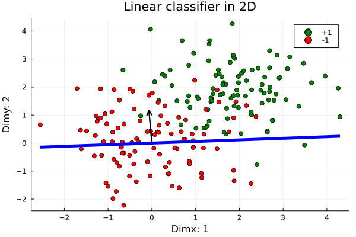
A better organisation
Now we rewrite the perceptron algorithm setting all the parameters in a structure and using what could be a generic interface for any supervised model. This is the approach used by most ML libraries. We will see how to measure the classification error and as we are here we add the constant term with the constant addition to the data trick (note that editing every time the feature matrix is NOT efficient and we do it here only for simplicity. A better way is to explicitly model the perceptron model with a constant parameter.)
julia> abstract type SupervisedModel endjulia> abstract type TrainingOptions endjulia> mutable struct Perceptron <: SupervisedModel θ::Vector{Float64} endjulia> mutable struct PerceptronTrainingOptions <: TrainingOptions epochs::Int64 verbose::Bool shuffle::Bool function PerceptronTrainingOptions(;epochs=1,verbose=false,shuffle=false) return new(epochs,verbose,shuffle) end endjulia> function predict(model::Perceptron,x::AbstractVector) x = vcat(1.0,x) x' * model.θ > eps() ? (return 1) : (return -1) endpredict (generic function with 1 method)julia> function predict(model::Perceptron,X::AbstractMatrix) return [predict(model,r) for r in eachrow(X)] endpredict (generic function with 2 methods)julia> function update!(model::Perceptron,X::Vector,y) X = vcat(1.0,X) model.θ = model.θ .+ y .* X return model.θ endupdate! (generic function with 1 method)julia> function train!(model::Perceptron,X,y,ops=PerceptronTrainingOptions()::TrainingOptions) epochs = ops.epochs verbose = ops.verbose (nR,nD) = size(X) nD += 1 for t in 1:epochs errors = 0 if ops.shuffle # more efficient ! idx = shuffle(1:nR) X = X[idx,:] y = y[idx] end for n in 1:nR if verbose println("$n: X[n,:] \t θ: $(model.θ)") end if predict(model,X[n,:]) != y[n] errors += 1 θ = update!(model,X[n,:],y[n]) if verbose println("**update! New theta: $(model.θ)") end end end if verbose println("Epoch $t errors: $errors") end end return model.θ endtrain! (generic function with 2 methods)
Testing the Perceptron algorithm
julia> m = Perceptron(zeros(size(X,2)+1))Main.Perceptron([0.0, 0.0, 0.0])julia> ops = PerceptronTrainingOptions()Main.PerceptronTrainingOptions(1, false, false)julia> train!(m,X,y,ops)3-element Vector{Float64}: -5.0 1.7424999999999995 2.6404999999999994julia> plot2DClassifierWithData(X,y,m.θ,pid=9)
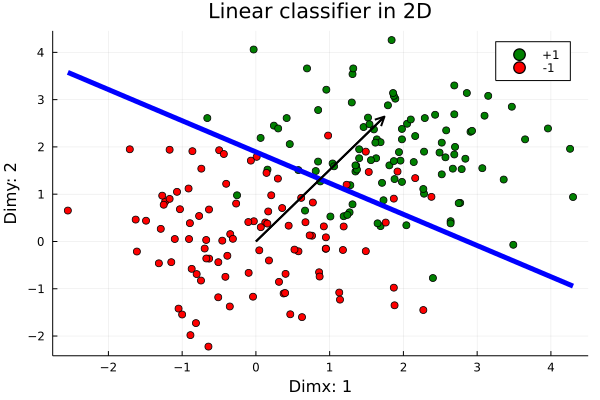
julia> ŷ = predict(m,X)200-element Vector{Int64}: -1 1 -1 -1 1 -1 1 1 -1 1 ⋮ 1 1 1 -1 -1 -1 1 -1 1julia> inSampleAccuracy = sum(y .== ŷ)/length(y)0.89
Let's see if shuffling and increasing epochs we improve the accuracy....
julia> ops = PerceptronTrainingOptions(verbose=false,epochs=5,shuffle=true)Main.PerceptronTrainingOptions(5, false, true)julia> m = Perceptron(zeros(size(X,2)+1))Main.Perceptron([0.0, 0.0, 0.0])julia> train!(m,X,y,ops)3-element Vector{Float64}: -6.0 3.2406999999999955 3.5374000000000034julia> plot2DClassifierWithData(X,y,m.θ,pid=10)
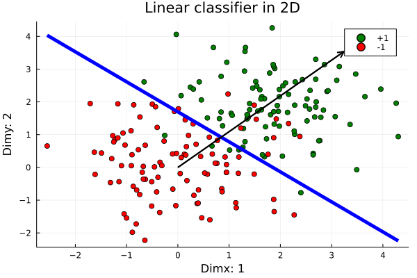
julia> ŷ = predict(m,X)200-element Vector{Int64}: 1 1 -1 -1 1 -1 1 1 -1 1 ⋮ 1 1 1 -1 -1 -1 1 -1 1julia> inSampleAccuracy = sum(y .== ŷ)/length(y)0.92
Cross-validation and hyperparameters optimisation
Let's see now using separate training/validation We use the BetaML partition() function
julia> ((xtrain,xtest),(ytrain,ytest)) = partition([X,y],[0.6,0.4])2-element Vector{Vector}: AbstractMatrix{Float64}[[-0.861 1.91; 1.35 1.48; … ; 0.0637 2.19; 0.396 -1.09], [1.37 1.52; 1.18 -0.18; … ; 1.98 2.38; -1.49 0.439]] AbstractVector{Int64}[[-1, 1, 1, -1, 1, -1, -1, 1, -1, -1 … 1, 1, 1, 1, 1, 1, -1, -1, 1, -1], [1, -1, 1, -1, 1, -1, -1, -1, -1, -1 … 1, -1, -1, 1, 1, 1, 1, -1, 1, -1]]julia> m = Perceptron(zeros(size(X,2)+1))Main.Perceptron([0.0, 0.0, 0.0])julia> ops = PerceptronTrainingOptions(epochs=5,shuffle=true)Main.PerceptronTrainingOptions(5, false, true)julia> train!(m,xtrain,ytrain,ops)3-element Vector{Float64}: -4.0 3.7297999999999973 1.829999999999997julia> plot2DClassifierWithData(xtrain,ytrain,m.θ,pid=11)
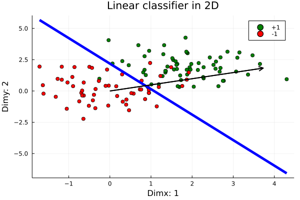
julia> ŷtrain = predict(m,xtrain)120-element Vector{Int64}: -1 1 1 -1 1 -1 1 1 -1 -1 ⋮ 1 1 1 1 1 1 -1 1 -1julia> trainAccuracy = accuracy(ŷtrain,ytrain)0.9166666666666666julia> sum(ytrain .== ŷtrain)/length(ytrain)0.9166666666666666julia> # @edit accuracy(ŷtrain,ytrain) ŷtest = predict(m,xtest)80-element Vector{Int64}: 1 1 1 1 1 -1 -1 1 -1 -1 ⋮ -1 1 1 1 1 1 -1 1 -1julia> testAccuracy = accuracy(ŷtest,ytest)0.8625julia> plot2DClassifierWithData(xtest,ytest,m.θ,pid=12)
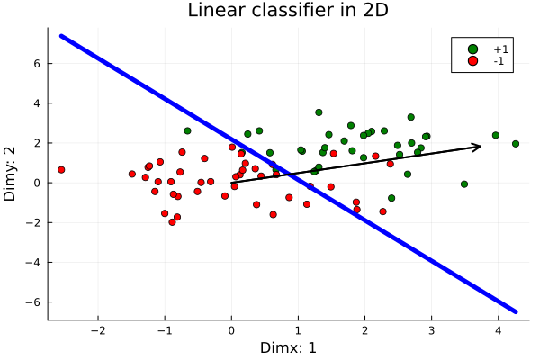
julia> cfOut = ConfusionMatrix(ŷtest,ytest)BetaML.Utils.ConfusionMatrix{Int64}([1, -1], ["1", "-1"], 0.8625, 0.13749999999999996, [36, 44], [41, 39], [33 3; 8 36], [0.9166666666666666 0.08333333333333333; 0.18181818181818182 0.8181818181818182], [33, 36], [36, 33], [8, 3], [3, 8], [0.8048780487804879, 0.9230769230769231], [0.9166666666666666, 0.8181818181818182], [0.8181818181818182, 0.9166666666666666], [0.8571428571428571, 0.8674698795180723], (0.8639774859287055, 0.8698874296435273), (0.8674242424242424, 0.8625), (0.8674242424242424, 0.8723484848484848), (0.8623063683304647, 0.8628227194492254))julia> print(cfOut)----------------------------------------------------------------- *** CONFUSION MATRIX *** Scores actual (rows) vs predicted (columns): Normalised scores actual (rows) vs predicted (columns): *** CONFUSION REPORT *** - Accuracy: 0.8625 - Misclassification rate: 0.13749999999999996 - Number of classes: 2 N Class precision recall specificity f1Score actualCount predictedCount TPR TNR support 1 1 0.805 0.917 0.818 0.857 36 41 2 -1 0.923 0.818 0.917 0.867 44 39 - Simple avg. 0.864 0.867 0.867 0.862 - Weigthed avg. 0.870 0.863 0.872 0.863 -----------------------------------------------------------------
Lets use CrossValidation
julia> ((xtrain,xvalidation,xtest),(ytrain,yvalidation,ytest)) = partition([X,y],[0.6,0.2,0.2])2-element Vector{Vector}: AbstractMatrix{Float64}[[0.947 -0.155; -0.77 0.539; … ; 1.32 3.66; 1.86 3.14], [-1.1475 -0.4378; 1.31 0.786; … ; 0.577 -0.208; -0.4136 -0.7475], [1.14 -1.23; 1.24 0.562; … ; 0.873 1.27; 2.1 2.58]] AbstractVector{Int64}[[-1, -1, 1, 1, -1, -1, -1, 1, 1, 1 … -1, 1, 1, 1, -1, -1, -1, 1, 1, 1], [-1, 1, -1, 1, -1, 1, 1, -1, 1, 1 … -1, -1, -1, 1, -1, -1, -1, -1, -1, -1], [-1, 1, 1, 1, -1, -1, -1, 1, -1, 1 … 1, -1, -1, -1, -1, -1, 1, 1, 1, 1]]julia> # Very few records..... let's go back to using only two subsets but with CrossValidation ((xtrain,xtest),(ytrain,ytest)) = partition([X,y],[0.6,0.4])2-element Vector{Vector}: AbstractMatrix{Float64}[[1.52 2.62; -0.74 1.54; … ; 2.84 1.75; 1.94 1.89], [-0.659 2.61; 0.844 2.78; … ; -1.1 0.0522; 2.75 0.811]] AbstractVector{Int64}[[1, -1, 1, -1, 1, -1, 1, 1, -1, -1 … 1, 1, 1, -1, 1, -1, -1, 1, 1, 1], [1, 1, 1, 1, 1, -1, -1, -1, -1, -1 … -1, 1, 1, -1, -1, -1, 1, -1, -1, 1]]julia> sampler = KFold(nSplits=10)BetaML.Utils.KFold(10, 1, true, Random._GLOBAL_RNG())julia> ops = PerceptronTrainingOptions(epochs=10,shuffle=true)Main.PerceptronTrainingOptions(10, false, true)julia> (acc,σ) = crossValidation([xtrain,ytrain],sampler) do trainData,valData,rng (xtrain,ytrain) = trainData; (xval,yval) = valData m = Perceptron(zeros(size(xtrain,2)+1)) train!(m,xtrain,ytrain,ops) ŷval = predict(m,xval) valAccuracy = accuracy(ŷval,yval) return valAccuracy end(0.8583333333333334, 0.08827915878928168)julia> epochsSet = 1:10:3011:10:301julia> shuffleSet = [false,true]2-element Vector{Bool}: 0 1julia> bestE = 00julia> bestShuffle = falsefalsejulia> bestAcc = 0.00.0julia> for e in epochsSet, s in shuffleSet global bestE, bestShuffle, bestAcc local acc local ops = PerceptronTrainingOptions(epochs=e,shuffle=s) (acc,_) = crossValidation([xtrain,ytrain],sampler) do trainData,valData,rng (xtrain,ytrain) = trainData; (xval,yval) = valData m = Perceptron(zeros(size(xtrain,2)+1)) train!(m,xtrain,ytrain,ops) ŷval = predict(m,xval) valAccuracy = accuracy(ŷval,yval) return valAccuracy end if acc > bestAcc bestAcc = acc bestE = e bestShuffle = s end endjulia> bestAcc0.925julia> bestE161julia> bestShuffletruejulia> ops = PerceptronTrainingOptions(epochs=bestE,shuffle=bestShuffle)Main.PerceptronTrainingOptions(161, false, true)julia> m = Perceptron(zeros(size(xtest,2)+1))Main.Perceptron([0.0, 0.0, 0.0])julia> train!(m,xtrain,ytrain,ops)3-element Vector{Float64}: -5.0 2.5832999999999586 4.0829999999999735julia> ŷtest = predict(m,xtest)80-element Vector{Int64}: 1 1 1 1 1 -1 -1 1 -1 -1 ⋮ 1 1 -1 -1 -1 1 -1 -1 1julia> testAccuracy = accuracy(ŷtest,ytest)0.875julia> plot2DClassifierWithData(xtest,ytest,m.θ,pid=13)
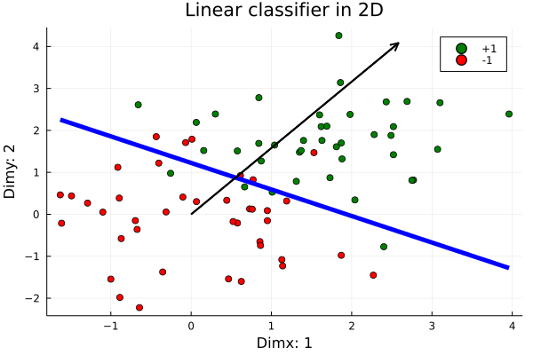
This page was generated using Literate.jl.